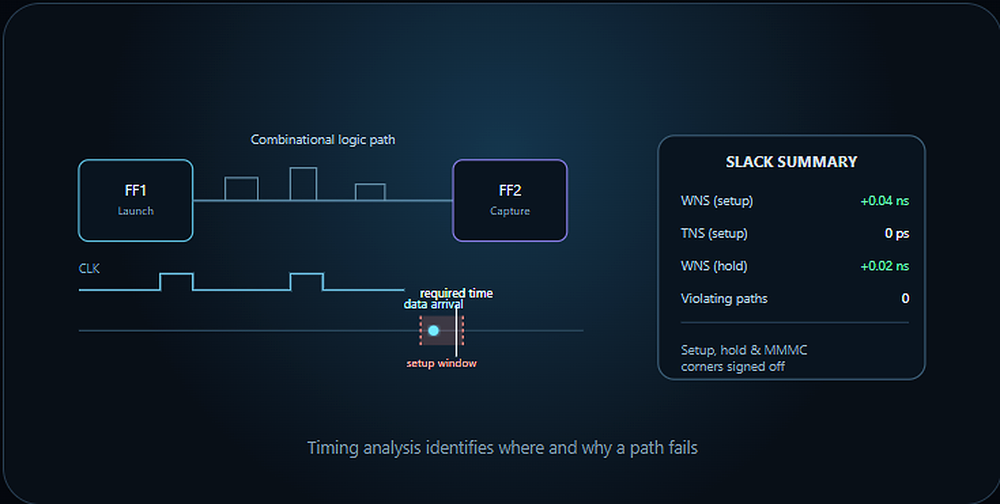

TIMING
Static Timing Analysis & Timing Closure
Timing closure requires more than identifying a negative slack number. We analyse timing paths, constraints, clock relationships and implementation conditions to determine the root cause and guide the appropriate fix.

Timing analysis identifies where and why a path fails
What we analyse
- Setup and hold paths
- Clock propagation and skew
- Constraints and exceptions
- MMMC scenarios
- Critical-path behaviour
Closure activities
- Cell sizing and buffering
- Placement optimization
- Clock optimization
- Routing-aware fixes
- ECO implementation
Client outcome
- Prioritised critical paths
- Root-cause analysis
- Fix recommendations
- Before/after timing comparison
- Signoff readiness tracking
Engineering outcomeClear visibility into timing risk and an engineering-led path from violation analysis to closure.